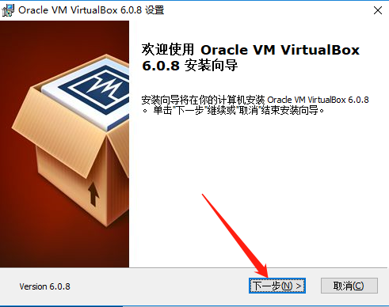

ROS（未完善）¶
Introduction¶
序言¶
ROS(机器人操作系统)近几年发展迅速，国内也有相当一部分开发人员有意向涉足ROS，但是苦于没有低门槛的系统性教程，只能望之兴叹，基于此我们设计了一套免费、零基础、理论与实践相结合的教程，以帮助有志于机器人开发的童鞋方便快捷的上手ROS，继而推动整个行业的进步。
1.课程内容¶
本教程主要由理论篇与实践篇组成，理论篇对应的是第1到第5章，实践篇对应的是第6章以及以后，具体内容如下:
理论篇
| 章节 | 内容 |
|---|---|
| 第1章 ROS概述与环境搭建 | 旨在了解ROS并搭建开发环境 |
| 第2章 ROS通信机制 | ROS核心实现 |
| 第3章 ROS通信机制进阶 | ROS核心实现 |
| 第4章 ROS运行管理 | ROS中零散但又常用的知识点 |
| 第5章 ROS常用组件 | ROS中比较实用的功能模块 |
实践篇
| 章节 | 内容 |
|---|---|
| 第6章 机器人系统仿真 | 机器人模型的创建，仿真环境的创建以及使用 |
| 第7章 机器人导航(仿真) | 仿真环境下实现导航功能 |
| 第8章 机器人平台设计 | 从0到1手把手教你DIY一台机器人 |
| 第9章 机器人导航(实体) | 将导航功能从仿真环境移植到实体机器人 |
| 第10章 ROS进阶 | ROS中的高级应用 |
| 第11章 ROS项目 | 公司内部一些ROS项目 |
| ... | ... |
整体而言，理论篇侧重于理论的介绍，是整个教程的基石，实践篇侧重于“可见"的应用，会通过一些案例将理论加以整合。
2.项目产出¶
部分演示如下
演示1:仿真环境下的导航实现

演示2:DIY的机器人
演示3:机器人SLAM
https://www.bilibili.com/video/BV15z4y1672p
演示4:机器人多点导航
https://www.bilibili.com/video/BV1j5411n7Nc
演示5:ROS模拟器
https://www.bilibili.com/video/BV1bx411E7SC
3.答疑¶
1.教程是完全免费的吗？
答:是。
2.课程学习需要储备哪些知识?
答:操作系统Linux，编程语言C++或Python，其它如果不会，遇到现学。
3.学习需要硬件支持吗？
答:仿真环境可以实现大多数需求，如有需要就买，买我们(http://www.autolabor.com.cn/)的。
4.写在最后¶
技术交流可以加非官方QQ群：869643967。
另外，课程内容如有不当，请多指正。
公司官网:http://www.autolabor.com.cn/
课程链接:https://www.bilibili.com/video/BV1Ci4y1L7ZZ
讲义链接:http://www.autolabor.com.cn/book/ROSTutorials/index.html
第 1 章 ROS概述与环境搭建¶
学习是一个循序渐进的过程，具体到计算机领域的软件开发层面，每当接触一个新的知识模块时，按照一般的步骤，我们会先去了解该模块的相关概念，然后再安装官方软件包，接下来再搭建其集成的开发环境...这些准备工作完毕之后，才算是叩开了新领域的大门。
学习ROS，我们也是遵循这一流程，本章作为ROS体系的开篇主要内容如下:
- ROS的相关概念
- 怎样安装ROS
- 如何搭建ROS的集成开发环境
该章内容学习完毕预期达成的目标如下:
-
了解 ROS 概念、设计目标以及发展历程
-
能够独立安装并运行 ROS
-
能够使用 C++ 或 Python 实现 ROS 版本的HelloWorld
-
能够搭建 ROS 的集成开发环境
-
了解 ROS 架构设计
案例演示：
1.ROS安装成功后,可以运行内置案例:该案例是通过键盘控制乌龟运动
2.集成开发环境使用了VScode，可以提高开发效率
1.1 ROS简介¶
ROS诞生背景
机器人是一种高度复杂的系统性实现，机器人设计包含了机械加工、机械结构设计、硬件设计、嵌入式软件设计、上层软件设计....是各种硬件与软件集成，甚至可以说机器人系统是当今工业体系的集大成者。
机器人体系是相当庞大的，其复杂度之高，以至于没有任何个人、组织甚至公司能够独立完成系统性的机器人研发工作。
一种更合适的策略是：让机器人研发者专注于自己擅长的领域，其他模块则直接复用相关领域更专业研发团队的实现，当然自身的研究也可以被他人继续复用。这种基于"复用"的分工协作，遵循了不重复发明轮子的原则，显然是可以大大提高机器人的研发效率的，尤其是随着机器人硬件越来越丰富，软件库越来越庞大，这种复用性和模块化开发需求也愈发强烈。
在此大背景下，于 2007 年，一家名为 柳树车库（Willow Garage）的机器人公司发布了 ROS(机器人操作系统)，ROS是一套机器人通用软件框架，可以提升功能模块的复用性，并且随着该系统的不断迭代与完善，如今 ROS 已经成为机器人领域的事实标准。
1.1.1ROS概念¶
ROS全称Robot Operating System(机器人操作系统)
- ROS是适用于机器人的开源元操作系统
- ROS集成了大量的工具，库，协议，提供类似OS所提供的功能，简化对机器人的控制
- 还提供了用于在多台计算机上获取，构建，编写和运行代码的工具和库，ROS在某些方面类似于“机器人框架”
- ROS设计者将ROS表述为“ROS = Plumbing + Tools + Capabilities + Ecosystem”，即ROS是通讯机制、工具软件包、机器人高层技能以及机器人生态系统的集合体

1.1.2ROS设计目标¶
机器人开发的分工思想，实现了不同研发团队间的共享和协作，提升了机器人的研发效率，为了服务“ 分工”，ROS主要设计了如下目标：
-
代码复用:ROS的目标不是成为具有最多功能的框架，ROS的主要目标是支持机器人技术研发中的代码重用。
-
分布式:ROS是进程（也称为Nodes）的分布式框架,ROS中的进程可分布于不同主机，不同主机协同工作，从而分散计算压力
-
松耦合:ROS中功能模块封装于独立的功能包或元功能包，便于分享，功能包内的模块以节点为单位运行，以ROS标准的IO作为接口，开发者不需要关注模块内部实现，只要了解接口规则就能实现复用,实现了模块间点对点的松耦合连接
-
精简：ROS被设计为尽可能精简，以便为ROS编写的代码可以与其他机器人软件框架一起使用。ROS易于与其他机器人软件框架集成：ROS已与OpenRAVE，Orocos和Player集成。
-
语言独立性：包括Java，C++，Python等。为了支持更多应用开发和移植，ROS设计为一种语言弱相关的框架结构，使用简洁，中立的定义语言描述模块间的消息接口，在编译中再产生所使用语言的目标文件，为消息交互提供支持，同时允许消息接口的嵌套使用
-
易于测试：ROS具有称为rostest的内置单元/集成测试框架，可轻松安装和拆卸测试工具。
-
大型应用：ROS适用于大型运行时系统和大型开发流程。
-
丰富的组件化工具包：ROS可采用组件化方式集成一些工具和软件到系统中并作为一个组件直接使用，如RVIZ（3D可视化工具），开发者根据ROS定义的接口在其中显示机器人模型等，组件还包括仿真环境和消息查看工具等
-
免费且开源：开发者众多，功能包多
1.1.3ROS发展历程¶
-
ROS是一个由来已久、贡献者众多的大型软件项目。在ROS诞生之前，很多学者认为，机器人研究需要一个开放式的协作框架，并且已经有不少类似的项目致力于实现这样的框架。在这些工作中，斯坦福大学在2000年年中开展了一系列相关研究项目，如斯坦福人工智能机器人（STandford AI Robot, STAIR）项目、个人机器人（Personal Robots, PR）项目等，在上述项目中，在研究具有代表性、集成式人工智能系统的过程中，创立了用于室内场景的高灵活性、动态软件系统，其可以用于机器人学研究。
-
2007年，柳树车库（Willow Garage）提供了大量资源，用于将斯坦福大学机器人项目中的软件系统进行扩展与完善，同时，在无数研究人员的共同努力下，ROS的核心思想和基本软件包逐渐得到完善。
-
ROS的发行版本（ROS distribution）指ROS软件包的版本，其与Linux的发行版本（如Ubuntu）的概念类似。推出ROS发行版本的目的在于使开发人员可以使用相对稳定的代码库，直到其准备好将所有内容进行版本升级为止。因此，每个发行版本推出后，ROS开发者通常仅对这一版本的bug进行修复，同时提供少量针对核心软件包的改进。
-
版本特点: 按照英文字母顺序命名，ROS 目前已经发布了ROS1 的终极版本: noetic，并建议后期过渡至 ROS2 版本。noetic 版本之前默认使用的是 Python2，noetic 支持 Python3。
建议版本: noetic 或 melodic 或 kinetic
另请参考：
- https://www.ros.org/about-ros/
- http://wiki.ros.org/ROS/Introduction
- http://wiki.ros.org/Distributions
1.2 ROS安装¶
我们使用的是 ROS 版本是 Noetic，那么可以在 ubuntu20.04、Mac 或 windows10 系统上安装，虽然一般用户平时使用的操作系统以windows居多,但是ROS之前的版本基本都不支持windows,所以当前我们选用的操作系统是 ubuntu,以方便向历史版本过渡。ubuntu安装常用方式有两种:
-
实体机安装 ubuntu (较为常用的是使用双系统，windows 与 ubuntu 并存)；
-
虚拟机安装 ubuntu。
两种方式比较，各有优缺点：
- 方案1可以保证性能，且不需要考虑硬件兼容性问题，但是和windows系统交互不便；
- 方案2可以方便的实现 windows 与 ubuntu 交互，不过性能稍差，且与硬件交互不便。
在 ROS 中，一些仿真操作是比较耗费系统资源的，且经常需要和一些硬件(雷达、摄像头、imu、STM32、arduino....)交互，因此，原则上建议采用方案1，不过如果只是出于学习目的，那么方案2也基本够用，且方案2在windows与ubuntu的交互上更为方便，对于学习者更为友好，因此本教程在此选用的是方案2。当然，具体采用哪种实现方案，请按需选择。
如果采用虚拟机安装 ubuntu，再安装 ROS 的话，大致流程如下:
- 安装虚拟机软件(比如：virtualbox 或 VMware)；
- 使用虚拟机软件虚拟一台主机；
- 在虚拟主机上安装 ubuntu 20.04；
- 在 ubuntu 上安装 ROS；
- 测试 ROS 环境是否可以正常运行。
虚拟机软件选择上，对于我们学习而言 virtualbox 和 VMware 都可以满足需求，二者比较，前者免费，后者收费，所以本教程选用 virtualbox。
1.2.1 安装虚拟机软件¶
1.下载virtualbox
安装 virtualbox 需要先访问官网，下载安装包，官网下载地址:https://www.virtualbox.org/wiki/Downloads
2.安装virtualbox
virtualbox 安装比较简单，如果没有特殊需求，双击安装文件，一直 "下一步" 即可。 
安装完毕后，虚拟机已经可以正常启动了，接下来需要使用其虚拟出一台计算机
1.2.2 虚拟一台主机¶
使用 virtual 虚拟计算机的过程也不算复杂，只需要按照提示配置其相关参数即可
1.2.3 安装 ubuntu¶
1.ubuntu安装
首先下载 Ubuntu 的镜像文件，链接如下:http://mirrors.aliyun.com/ubuntu-releases/20.04/；
然后，配置虚拟主机，关联 Ubuntu 镜像文件：

启动后，开始配置 ubuntu 操作系统：
安装过程中，断开网络连接，可以提升安装速度：

安装完毕后，会给出重启提示，点击重启确定按钮即可：
到目前为止 VirtualBox 已经正常安装了 ubuntu, 并启动成功。
2.使用优化
为了优化 ubuntu 操作的用户体验，方便虚拟机与宿主机的文件交换以及 USB 设备的正常使用，还需做如下操作:
1.安装虚拟机工具
重启使之生效，选择菜单栏的自动调整窗口大小,然后ubuntu 桌面会自动使用窗口大小:右ctrl + F全屏。
2.启动文件交换模式
3.安装扩展插件
先去 virtualbox 官网下载扩展包
在 virtual box 中添加扩展工具
在虚拟机中添加 USB 设备
重启后，使用ll /dev/ttyUSB* 或 ll /dev/ttyACM*即可查看新接入的设备。
4.其他
其他设置，比如输入法可以根据喜好自行下载安装。
ubuntu 20.04 鼠标右击没有创建文件选项，如果想要设置此选项，可以进入主目录下的模板目录，使用 gedit 创建一个空文本文档，以后，鼠标右击就可以添加新建文档选项，并且创建的文档与当前自定义的文档名称一致
....
1.2.4 安装 ROS¶
Ubuntu 安装完毕后，就可以安装 ROS 操作系统了，大致步骤如下:
-
配置ubuntu的软件和更新；
-
设置安装源；
-
设置key；
-
安装；
-
配置环境变量。
1.配置ubuntu的软件和更新
配置ubuntu的软件和更新，允许安装不经认证的软件。
首先打开“软件和更新”对话框，具体可以在 Ubuntu 搜索按钮中搜索。
打开后按照下图进行配置（确保勾选了"restricted"， "universe，" 和 "multiverse."）
2.设置安装源
官方默认安装源:
| Text Only | |
|---|---|
1 | |
或来自国内清华的安装源
| Text Only | |
|---|---|
1 | |
或来自国内中科大的安装源
| Text Only | |
|---|---|
1 | |
PS:
- 回车后,可能需要输入管理员密码
- 建议使用国内资源，安装速度更快。
3.设置key
| Text Only | |
|---|---|
1 | |
4.安装
首先需要更新 apt(以前是 apt-get, 官方建议使用 apt 而非 apt-get),apt 是用于从互联网仓库搜索、安装、升级、卸载软件或操作系统的工具。
| Text Only | |
|---|---|
1 | |
等待...
然后，再安装所需类型的 ROS:ROS 多个类型:Desktop-Full、Desktop、ROS-Base。这里介绍较为常用的Desktop-Full(官方推荐)安装: ROS, rqt, rviz, robot-generic libraries, 2D/3D simulators, navigation and 2D/3D perception
| Text Only | |
|---|---|
1 | |
等待......(比较耗时)
友情提示: 由于网络原因,导致连接超时，可能会安装失败，如下所示:
可以多次重复调用 更新 和 安装命令，直至成功。
5.配置环境变量
配置环境变量，方便在任意 终端中使用 ROS。
| Text Only | |
|---|---|
1 2 | |
卸载
如果需要卸载ROS可以调用如下命令:
| Text Only | |
|---|---|
1 | |
注意: 在 ROS 版本 noetic 中无需构建软件包的依赖关系，没有rosdep的相关安装与配置。
另请参考：http://wiki.ros.org/noetic/Installation/Ubuntu。
后记
6.安装构建依赖
在 noetic 最初发布时，和其他历史版本稍有差异的是:没有安装构建依赖这一步骤。随着 noetic 不断完善，官方补齐了这一操作。
首先安装构建依赖的相关工具
| Text Only | |
|---|---|
1 | |
ROS中使用许多工具前，要求需要初始化rosdep(可以安装系统依赖) -- 上一步实现已经安装过了。
| Text Only | |
|---|---|
1 | |
初始化rosdep
| Text Only | |
|---|---|
1 2 | |
如果一切顺利的话，rosdep 初始化与更新的打印结果如下:

但是，在 rosdep 初始化时，多半会抛出异常。
问题:
原因:
境外资源被屏蔽。
解决:
百度或google搜索，解决方式有多种(https://github.com/ros/rosdistro/issues/9721)，可惜在 ubuntu20.04 下，集体失效。
新思路:将相关资源备份到 gitee,修改 rosdep 源码,重新定位资源。
实现:
1.先打开资源备份路径:https://gitee.com/zhao-xuzuo/rosdistro，打开 rosdistro/rosdep/sources.list.d/20-default.list文件留作备用(主要是复用URL的部分内容:gitee.com/zhao-xuzuo/rosdistro/raw/master)。
2.进入"/usr/lib/python3/dist-packages/" 查找rosdep中和raw.githubusercontent.com相关的内容，调用命令:
| Text Only | |
|---|---|
1 | |
3.修改相关文件，主要有: ./rosdistro/__init__.py、./rosdep2/gbpdistro_support.py、./rosdep2/sources_list.py 、./rosdep2/rep3.py。可以使用sudo gedit命令修改文件:
文件中涉及的 URL 内容，如果是:raw.githubusercontent.com/ros/rosdistro/master都替换成步骤1中准备的gitee.com/zhao-xuzuo/rosdistro/raw/master即可。
修改完毕，再重新执行命令:
| Text Only | |
|---|---|
1 2 | |
就可以正常实现 rosdep 的初始化与更新了。
1.2.5 测试 ROS¶
ROS 内置了一些小程序，可以通过运行这些小程序以检测 ROS 环境是否可以正常运行
-
首先启动三个命令行(ctrl + alt + T)
-
命令行1键入:
roscore -
命令行2键入:
rosrun turtlesim turtlesim_node(此时会弹出图形化界面) -
命令行3键入:
rosrun turtlesim turtle_teleop_key(在3中可以通过上下左右控制2中乌龟的运动)
最终结果如下所示:
注意：光标必须聚焦在键盘控制窗口，否则无法控制乌龟运动。
1.2.6 资料:其他ROS版本安装¶
我们的教程采用的是ROS的最新版本noetic，不过noetic较之于之前的ROS版本变动较大且部分功能包还未更新，因此如果有需要(比如到后期实践阶段，由于部分重要的功能包还未更新，需要ROS降级)，也会安装之前版本的ROS，在此，建议选用的版本是melodic或kinetic。
接下来，就以melodic为例演示ROS历史版本安装(当然先要准备与melodic对应的Ubuntu18.04):
1.配置ubuntu的软件和更新
首先打开“软件和更新”对话框，打开后按照下图进行配置（确保你的"restricted"， "universe，" 和 "multiverse."前是打上勾的）
2.安装源
官方默认安装源:
| Text Only | |
|---|---|
1 | |
或来自国内中科大的安装源
| Text Only | |
|---|---|
1 | |
或来自国内清华的安装源
| Text Only | |
|---|---|
1 | |
PS:回车后,可能需要输入管理员密码
3.设置key
| Text Only | |
|---|---|
1 | |
4.安装
首先需要更新 apt(以前是 apt-get, 官方建议使用 apt 而非 apt-get),apt 是用于从互联网仓库搜索、安装、升级、卸载软件或操作系统的工具。
| Text Only | |
|---|---|
1 | |
等待...
然后，再安装所需类型的 ROS:ROS 多个类型:Desktop-Full、Desktop、ROS-Base。这里介绍较为常用的Desktop-Full(官方推荐)安装: ROS, rqt, rviz, robot-generic libraries, 2D/3D simulators, navigation and 2D/3D perception
| Text Only | |
|---|---|
1 | |
等待...
5.环境设置
配置环境变量，方便在任意 终端中使用 ROS。
| Text Only | |
|---|---|
1 2 | |
6.安装构建依赖
首先安装构建依赖的相关工具
| Text Only | |
|---|---|
1 | |
然后安装rosdep(可以安装系统依赖)
| Text Only | |
|---|---|
1 | |
初始化rosdep
| Text Only | |
|---|---|
1 2 | |
注意:
当执行到最后 sudo rosdep init 时，可能会抛出异常;
错误提示:
ERROR: cannot download default sources list from: https://raw.githubusercontent.com/ros/rosdistro/master/rosdep/sources.list.d/20-default.list Website may be down.
原因:
境外资源被屏蔽
解决思路:
查询错误提示中域名的IP地址，然后修改 /etc/hosts 文件，添加域名与IP映射
实现:
1.访问域名查询网址:https://site.ip138.com/
2.查询域名ip，搜索框中输入: raw.githubusercontent.com，自由复制一个查询到的IP
3.修改 /etc/hosts 文件，命令:
| Text Only | |
|---|---|
1 | |
添加内容:151.101.76.133 raw.githubusercontent.com (查询到的ip与域名)，保存并退出。

或者，也可以使用 vi 或 vim 修改。
4.重新执行rosdep初始化与更新命令，如果rosdep update 抛出异常，基本都是网络原因导致的(建议使用手机热点)，多尝试几次即可。
综上，历史版本的安装与noetic流程类似，只是多出了“构建功能包依赖关系”的步骤。
另请参考：http://wiki.ros.org/melodic/Installation/Ubuntu
1.3 ROS快速体验¶
编写 ROS 程序，在控制台输出文本: Hello World，分别使用 C++ 和 Python 实现。
1.3.1 HelloWorld实现简介¶
ROS中涉及的编程语言以C++和Python为主，ROS中的大多数程序两者都可以实现，在本系列教程中，每一个案例也都会分别使用C++和Python两种方案演示，大家可以根据自身情况选择合适的实现方案。
ROS中的程序即便使用不同的编程语言，实现流程也大致类似，以当前HelloWorld程序为例，实现流程大致如下：
- 先创建一个工作空间；
- 再创建一个功能包；
- 编辑源文件；
- 编辑配置文件；
- 编译并执行。
上述流程中，C++和Python只是在步骤3和步骤4的实现细节上存在差异，其他流程基本一致。本节先实现C++和Python程序编写的通用部分步骤1与步骤2，1.3.2节和1.3.3节再分别使用C++和Python编写HelloWorld。
1.创建工作空间并初始化
| Text Only | |
|---|---|
1 2 3 | |
上述命令，首先会创建一个工作空间以及一个 src 子目录，然后再进入工作空间调用 catkin_make命令编译。
2.进入 src 创建 ros 包并添加依赖
| Text Only | |
|---|---|
1 2 | |
上述命令，会在工作空间下生成一个功能包，该功能包依赖于 roscpp、rospy 与 std_msgs，其中roscpp是使用C++实现的库，而rospy则是使用python实现的库，std_msgs是标准消息库，创建ROS功能包时，一般都会依赖这三个库实现。
注意: 在ROS中，虽然实现同一功能时，C++和Python可以互换，但是具体选择哪种语言，需要视需求而定，因为两种语言相较而言:C++运行效率高但是编码效率低，而Python则反之，基于二者互补的特点，ROS设计者分别设计了roscpp与rospy库，前者旨在成为ROS的高性能库，而后者则一般用于对性能无要求的场景，旨在提高开发效率。
1.3.2 HelloWorld实现A(C++)¶
本节内容基于1.3.1，假设你已经创建了ROS的工作空间，并且创建了ROS的功能包，那么就可以进入核心步骤了，使用C++编写程序实现：
1.进入 ros 包的 src 目录编辑源文件
| Text Only | |
|---|---|
1 | |
C++源码实现(文件名自定义)
| Text Only | |
|---|---|
1 2 3 4 5 6 7 8 9 10 11 12 13 | |
2.编辑 ros 包下的 Cmakelist.txt文件
| Text Only | |
|---|---|
1 2 3 4 5 6 | |
3.进入工作空间目录并编译
| Text Only | |
|---|---|
1 2 | |
生成 build devel ....
4.执行
先启动命令行1：
| Text Only | |
|---|---|
1 | |
再启动命令行2：
| Text Only | |
|---|---|
1 2 3 | |
命令行输出: HelloWorld!
PS:source ~/工作空间/devel/setup.bash可以添加进.bashrc文件，使用上更方便
添加方式1: 直接使用 gedit 或 vi 编辑 .bashrc 文件，最后添加该内容
添加方式2:echo "source ~/工作空间/devel/setup.bash" >> ~/.bashrc
1.3.3 HelloWorld实现B(Python)¶
本节内容基于1.3.1，假设你已经创建了ROS的工作空间，并且创建了ROS的功能包，那么就可以进入核心步骤了，使用Python编写程序实现：
1.进入 ros 包添加 scripts 目录并编辑 python 文件
| Text Only | |
|---|---|
1 2 | |
新建 python 文件: (文件名自定义)
| Text Only | |
|---|---|
1 2 3 4 5 6 7 8 9 10 11 | |
2.为 python 文件添加可执行权限
| Text Only | |
|---|---|
1 | |
3.编辑 ros 包下的 CamkeList.txt 文件
| Text Only | |
|---|---|
1 2 3 | |
4.进入工作空间目录并编译
| Text Only | |
|---|---|
1 2 | |
5.进入工作空间目录并执行
先启动命令行1：
| Text Only | |
|---|---|
1 | |
再启动命令行2：
| Text Only | |
|---|---|
1 2 3 | |
输出结果:Hello World!!!!
1.4 ROS集成开发环境搭建¶
和大多数开发环境一样，理论上，在 ROS 中，只需要记事本就可以编写基本的 ROS 程序，但是工欲善其事必先利其器，为了提高开发效率，可以先安装集成开发工具和使用方便的工具:终端、IDE....
1.4.1 安装终端¶
在 ROS 中，需要频繁的使用到终端，且可能需要同时开启多个窗口，推荐一款较为好用的终端:Terminator。效果如下:
1.安装
| Text Only | |
|---|---|
1 | |
2.添加到收藏夹
显示应用程序 ---> 搜索 terminator ---> 右击 选择 添加到收藏夹
3.Terminator 常用快捷键
第一部份：关于在同一个标签内的操作
| Text Only | |
|---|---|
1 2 3 4 5 6 7 8 9 10 11 12 13 14 15 16 17 18 19 20 | |
第二部份：有关各个标签之间的操作
| Text Only | |
|---|---|
1 2 3 4 5 6 7 8 9 10 11 12 13 14 15 16 17 | |
1.4.2 安装VScode¶
VSCode 全称 Visual Studio Code，是微软出的一款轻量级代码编辑器，免费、开源而且功能强大。它支持几乎所有主流的程序语言的语法高亮、智能代码补全、自定义热键、括号匹配、代码片段、代码对比 Diff、GIT 等特性，支持插件扩展，并针对网页开发和云端应用开发做了优化。软件跨平台支持 Win、Mac 以及 Linux。
1.下载
vscode 下载:https://code.visualstudio.com/docs?start=true
历史版本下载链接: https://code.visualstudio.com/updates
2.vscode 安装与卸载
2.1 安装
方式1: 双击安装即可(或右击选择安装)
方式2: sudo dpkg -i xxxx.deb
2.2 卸载
| Text Only | |
|---|---|
1 | |
3.vscode 集成 ROS 插件
使用 VScode 开发 ROS 程序，需要先安装一些插件，常用插件如下:
4.vscode 使用_基本配置
4.1 创建 ROS 工作空间
| Text Only | |
|---|---|
1 2 3 | |
4.2 启动 vscode
进入 xxx_ws 启动 vscode
| Text Only | |
|---|---|
1 2 | |
4.3 vscode 中编译 ros
快捷键 ctrl + shift + B 调用编译，选择:catkin_make:build
可以点击配置设置为默认，修改.vscode/tasks.json 文件
| Text Only | |
|---|---|
1 2 3 4 5 6 7 8 9 10 11 12 13 14 15 16 17 18 | |
4.4 创建 ROS 功能包
选定 src 右击 ---> create catkin package
设置包名 添加依赖
4.5 C++ 实现
在功能包的 src 下新建 cpp 文件
| Text Only | |
|---|---|
1 2 3 4 5 6 7 8 9 10 11 12 13 14 15 16 | |
PS1: 如果没有代码提示
修改 .vscode/c_cpp_properties.json
设置 "cppStandard": "c++17"
PS2: main 函数的参数不可以被 const 修饰
PS3: 当ROS__INFO 终端输出有中文时，会出现乱码
INFO: ????????????????????????
解决办法：在函数开头加入下面代码的任意一句
| Text Only | |
|---|---|
1 2 | |
4.6 python 实现
在 功能包 下新建 scripts 文件夹，添加 python 文件，并添加可执行权限
| Text Only | |
|---|---|
1 2 3 4 5 6 7 8 9 10 11 12 13 14 15 16 17 | |
4.7 配置 CMakeLists.txt
C++ 配置:
| Text Only | |
|---|---|
1 2 3 4 5 6 | |
Python 配置:
| Text Only | |
|---|---|
1 2 3 | |
4.8 编译执行
编译: ctrl + shift + B
执行: 和之前一致，只是可以在 VScode 中添加终端，首先执行:source ./devel/setup.bash
PS:
如果不编译直接执行 python 文件，会抛出异常。
1.第一行解释器声明，可以使用绝对路径定位到 python3 的安装路径 #! /usr/bin/python3，但是不建议
2.建议使用 #!/usr/bin/env python 但是会抛出异常 : /usr/bin/env: “python”: 没有那个文件或目录
3.解决1: #!/usr/bin/env python3 直接使用 python3 但存在问题: 不兼容之前的 ROS 相关 python 实现
4.解决2: 创建一个链接符号到 python 命令:sudo ln -s /usr/bin/python3 /usr/bin/python
5.其他 IDE
ROS 开发可以使用的 IDE 还是比较多的，除了上述的 VScode，还有 Eclipse、QT、PyCharm、Roboware ....,详情可以参考官网介绍:http://wiki.ros.org/IDEs
QT Creator Plugin for ROS，参考教程:https://ros-qtc-plugin.readthedocs.io/en/latest/
Roboware 参考:http://www.roboware.me/#/(PS: Roboware 已经停更了，可惜....)
1.4.3 launch文件演示¶
1.需求
一个程序中可能需要启动多个节点，比如:ROS 内置的小乌龟案例，如果要控制乌龟运动，要启动多个窗口，分别启动 roscore、乌龟界面节点、键盘控制节点。如果每次都调用 rosrun 逐一启动，显然效率低下，如何优化?
官方给出的优化策略是使用 launch 文件，可以一次性启动多个 ROS 节点。
2.实现
-
选定功能包右击 ---> 添加 launch 文件夹
-
选定 launch 文件夹右击 ---> 添加 launch 文件
-
编辑 launch 文件内容
| Text Only | |
|---|---|
1 2 3 4 5 | |
-
node ---> 包含的某个节点
-
pkg -----> 功能包
-
type ----> 被运行的节点文件
-
name --> 为节点命名
-
output-> 设置日志的输出目标
-
运行 launch 文件
roslaunch 包名 launch文件名
- 运行结果: 一次性启动了多个节点
1.5 ROS架构¶
到目前为止，我们已经安装了ROS，运行了ROS中内置的小乌龟案例，并且也编写了ROS小程序，对ROS也有了一个大概的认知，当然这个认知可能还是比较模糊并不清晰的，接下来，我们要从宏观上来介绍一下ROS的架构设计。
立足不同的角度，对ROS架构的描述也是不同的，一般我们可以从设计者、维护者、系统结构与自身结构4个角度来描述ROS结构:
1.设计者
ROS设计者将ROS表述为“ROS = Plumbing + Tools + Capabilities + Ecosystem”
-
Plumbing: 通讯机制(实现ROS不同节点之间的交互)
-
Tools :工具软件包(ROS中的开发和调试工具)
-
Capabilities :机器人高层技能(ROS中某些功能的集合，比如:导航)
-
Ecosystem:机器人生态系统(跨地域、跨软件与硬件的ROS联盟)
2.维护者
立足维护者的角度: ROS 架构可划分为两大部分
-
main：核心部分，主要由Willow Garage 和一些开发者设计、提供以及维护。它提供了一些分布式计算的基本工具，以及整个ROS的核心部分的程序编写。
-
universe：全球范围的代码，有不同国家的ROS社区组织开发和维护。一种是库的代码，如OpenCV、PCL等；库的上一层是从功能角度提供的代码，如人脸识别，他们调用下层的库；最上层的代码是应用级的代码，让机器人完成某一确定的功能。
3.系统架构
立足系统架构: ROS 可以划分为三层
OS 层，也即经典意义的操作系统
-
ROS 只是元操作系统，需要依托真正意义的操作系统，目前兼容性最好的是 Linux 的 Ubuntu，Mac、Windows 也支持 ROS 的较新版本
-
中间层
是 ROS 封装的关于机器人开发的中间件，比如: - 基于 TCP/UDP 继续封装的 TCPROS/UDPROS 通信系统
- 用于进程间通信 Nodelet，为数据的实时性传输提供支持
-
另外，还提供了大量的机器人开发实现库，如：数据类型定义、坐标变换、运动控制....
-
应用层
功能包，以及功能包内的节点，比如: master、turtlesim的控制与运动节点...
4.自身结构
就 ROS 自身实现而言: 也可以划分为三层
- 文件系统
ROS文件系统级指的是在硬盘上面查看的ROS源代码的组织形式
- 计算图
ROS 分布式系统中不同进程需要进行数据交互，计算图可以以点对点的网络形式表现数据交互过程，计算图中的重要概念: 节点(Node)、消息(message)、通信机制_主题(topic)、通信机制_服务(service)
- 开源社区
ROS的社区级概念是ROS网络上进行代码发布的一种表现形式 -
发行版（Distribution） ROS发行版是可以独立安装、带有版本号的一系列综合功能包。ROS发行版像Linux发行版一样发挥类似的作用。这使得ROS软件安装更加容易，而且能够通过一个软件集合维持一致的版本。
-
软件库（Repository） ROS依赖于共享开源代码与软件库的网站或主机服务，在这里不同的机构能够发布和分享各自的机器人软件与程序。
-
ROS维基（ROS Wiki） ROS Wiki是用于记录有关ROS系统信息的主要论坛。任何人都可以注册账户、贡献自己的文件、提供更正或更新、编写教程以及其他行为。网址是http://wiki.ros.org/。
-
Bug提交系统（Bug Ticket System）如果你发现问题或者想提出一个新功能，ROS提供这个资源去做这些。
-
邮件列表（Mailing list） ROS用户邮件列表是关于ROS的主要交流渠道，能够像论坛一样交流从ROS软件更新到ROS软件使用中的各种疑问或信息。网址是http://lists.ros.org/。
-
ROS问答（ROS Answer）用户可以使用这个资源去提问题。网址是https://answers.ros.org/questions/。
-
博客（Blog）你可以看到定期更新、照片和新闻。网址是https://www.ros.org/news/，不过博客系统已经退休，ROS社区取而代之，网址是https://discourse.ros.org/。
现在处于学习的初级阶段，只是运行了ROS的内置案例，编写了简单的ROS实现，因此，受限于当前进度，不会详细介绍所有设计架构中的所有模块，当前只介绍文件系统与计算图，下一章会介绍 ROS 的通信机制，这也是ROS的核心实现之一。
1.5.1 ROS文件系统¶
ROS文件系统级指的是在硬盘上ROS源代码的组织形式，其结构大致可以如下图所示：
| Text Only | |
|---|---|
1 2 3 4 5 6 7 8 9 10 11 12 13 14 15 16 17 18 19 20 21 22 23 24 25 26 27 28 29 30 31 | |
ROS 文件系统中部分目录和文件前面编程中已经有所涉及，比如功能包的创建、src目录下cpp文件的编写、scripts目录下python文件的编写、launch目录下launch文件的编写，并且也配置了 package.xml 与 CMakeLists.txt 文件。其他目录下的内容后面教程将会再行介绍，当前我们主要介绍: package.xml 与 CMakeLists.txt 这两个配置文件。
1.package.xml
该文件定义有关软件包的属性，例如软件包名称，版本号，作者，维护者以及对其他catkin软件包的依赖性。请注意，该概念类似于旧版 rosbuild 构建系统中使用的manifest.xml文件。
| Text Only | |
|---|---|
1 2 3 4 5 6 7 8 9 10 11 12 13 14 15 16 17 18 19 20 21 22 23 24 25 26 27 28 29 30 31 32 33 34 35 36 37 38 39 40 41 42 43 44 45 46 47 48 49 50 51 52 53 54 55 56 57 58 59 60 61 62 63 64 65 66 67 68 69 70 71 72 73 74 75 76 77 78 79 80 81 | |
2.CMakelists.txt
文件CMakeLists.txt是CMake构建系统的输入，用于构建软件包。任何兼容CMake的软件包都包含一个或多个CMakeLists.txt文件，这些文件描述了如何构建代码以及将代码安装到何处。
| Text Only | |
|---|---|
1 2 3 4 5 6 7 8 9 10 11 12 13 14 15 16 17 18 19 20 21 22 23 24 25 26 27 28 29 30 31 32 33 34 35 36 37 38 39 40 41 42 43 44 45 46 47 48 49 50 51 52 53 54 55 56 57 58 59 60 61 62 63 64 65 66 67 68 69 70 71 72 73 74 75 76 77 78 79 80 81 82 83 84 85 86 87 88 89 90 91 92 93 94 95 96 97 98 99 100 101 102 103 104 105 106 107 108 109 110 111 112 113 114 115 116 117 118 119 120 121 122 123 124 125 126 127 128 129 130 131 132 133 134 135 136 137 138 139 140 141 142 143 144 145 146 147 148 149 150 151 152 153 154 155 156 157 158 159 160 161 162 163 164 165 166 167 168 169 170 171 172 173 174 175 176 177 178 179 180 181 182 183 184 185 186 187 188 189 190 191 192 193 194 195 196 197 198 199 200 201 202 203 204 205 206 207 208 209 210 211 212 213 214 215 216 217 218 219 220 221 222 223 | |
1.5.2 ROS文件系统相关命令¶
ROS 的文件系统本质上都还是操作系统文件，我们可以使用Linux命令来操作这些文件，不过，在ROS中为了更好的用户体验，ROS专门提供了一些类似于Linux的命令，这些命令较之于Linux原生命令，更为简介、高效。文件操作，无外乎就是增删改查与执行等操作，接下来，我们就从这五个维度，来介绍ROS文件系统的一些常用命令。
1.增
catkin_create_pkg 自定义包名 依赖包 === 创建新的ROS功能包
sudo apt install xxx === 安装 ROS功能包
2.删 sudo apt purge xxx ==== 删除某个功能包
3.查 rospack list === 列出所有功能包
rospack find 包名 === 查找某个功能包是否存在，如果存在返回安装路径
roscd 包名 === 进入某个功能包
rosls 包名 === 列出某个包下的文件
apt search xxx === 搜索某个功能包
4.改 rosed 包名 文件名 === 修改功能包文件
需要安装 vim
比如: rosed turtlesim Color.msg
5.执行
5.1roscore
roscore === 是 ROS 的系统先决条件节点和程序的集合， 必须运行 roscore 才能使 ROS 节点进行通信。
roscore 将启动:
-
ros master
-
ros 参数服务器
-
rosout 日志节点
用法:
| Text Only | |
|---|---|
1 | |
或(指定端口号)
| Text Only | |
|---|---|
1 | |
5.2 rosrun
rosrun 包名 可执行文件名 === 运行指定的ROS节点
比如: rosrun turtlesim turtlesim_node
5.3 roslaunch
roslaunch 包名 launch文件名 === 执行某个包下的 launch 文件
1.5.3 ROS计算图¶
1.计算图简介
前面介绍的是ROS文件结构，是磁盘上 ROS 程序的存储结构，是静态的，而 ros 程序运行之后，不同的节点之间是错综复杂的，ROS 中提供了一个实用的工具:rqt_graph。
rqt_graph能够创建一个显示当前系统运行情况的动态图形。ROS 分布式系统中不同进程需要进行数据交互，计算图可以以点对点的网络形式表现数据交互过程。rqt_graph是rqt程序包中的一部分。
2.计算图安装
如果前期把所有的功能包（package）都已经安装完成，则直接在终端窗口中输入
rosrun rqt_graph rqt_graph
如果未安装则在终端（terminal）中输入
| Text Only | |
|---|---|
1 2 | |
请使用你的ROS版本名称（比如:kinetic、melodic、Noetic等）来替换掉\
例如当前版本是 Noetic,就在终端窗口中输入
| Text Only | |
|---|---|
1 2 | |
3.计算图演示
接下来以 ROS 内置的小乌龟案例来演示计算图
首先，按照前面所示，运行案例
然后，启动新终端，键入: rqt_graph 或 rosrun rqt_graph rqt_graph，可以看到类似下图的网络拓扑图，该图可以显示不同节点之间的关系。
1.6 本章小结¶
本章内容主要介绍了ROS的相关概念、设计目标、发展历程等理论知识，安装了 ROS 并搭建了 ROS 的集成开发环境，编写了第一个 ROS小程序，对ROS实现架构也有了宏观的认识。ROS的大门已经敞开，接下来就要步入新的征程了。
第 2 章 ROS通信机制¶
2.1 话题通信¶
2.1.1 话题通信理论模型¶
2.1.2 话题通信基本操作A(C++)¶
2.1.3 话题通信基本操作B(Python)¶
2.1.4 话题通信自定义msg¶
2.1.5 话题通信自定义msg调用A(C++)¶
2.1.6 话题通信自定义msg调用B(Python)¶
2.2 服务通信¶
2.2.1 服务通信理论模型¶
2.2.2 服务通信自定义srv¶
2.2.3 服务通信自定义srv调用A(C++)¶
2.2.4 服务通信自定义srv调用B(Python)¶
2.3 参数服务器¶
2.3.1 参数服务器理论模型¶
2.3.2 参数操作A(C++)¶
2.3.3 参数操作B(Python)¶
2.4 常用命令¶
2.4.1 rosnode¶
2.4.2 rostopic¶
2.4.3 rosmsg¶
2.4.4 rosservice¶
2.4.5 rossrv¶
2.4.6 rosparam¶
2.5 通信机制实操¶
2.5.1 实操01_话题发布¶
2.5.2 实操02_话题订阅¶
2.5.3 实操03_服务调用¶
2.5.4 实操04_参数设置¶
2.6 通信机制比较¶
2.7 本章小结¶
第 3 章 ROS通信机制进阶¶
3.1 常用API¶
3.1.1 初始化¶
3.1.2 话题与服务相关对象¶
3.1.3 回旋函数¶
3.1.4 时间¶
3.1.5 其他函数¶
3.2 ROS中的头文件与源文件¶
3.2.1 自定义头文件调用¶
3.2.2 自定义源文件调用¶
3.3 Python模块导入¶
3.4 本章小结¶
第 4 章 ROS运行管理¶
4.1 ROS元功能包¶
4.2 ROS节点管理launch文件¶
4.2.1 launch文件标签之launch¶
4.2.2 launch文件标签之node¶
4.2.3 launch文件标签之include¶
4.2.4 launch文件标签之remap¶
4.2.5 launch文件标签之param¶
4.2.6 launch文件标签之rosparam¶
4.2.7 launch文件标签之group¶
4.2.8 launch文件标签之arg¶
4.3 ROS工作空间覆盖¶
4.4 ROS节点名称重名¶
##### 4.4.1 rosrun设置命名空间与重映射
##### 4.4.2 launch文件设置命名空间与重映射)
##### 4.4.3 编码设置命名空间与重映射
4.5 ROS话题名称设置¶
##### 4.5.1 rosrun设置话题重映射
##### 4.5.2 launch文件设置话题重映射
##### 4.5.3 编码设置话题名称
4.6 ROS参数名称设置¶
##### 4.6.1 rosrun设置参数
##### 4.6.2 launch文件设置参数
##### 4.6.3 编码设置参数
4.7 ROS分布式通信¶
4.8 本章小结¶
## 第 5 章 ROS常用组件
5.1 TF坐标变换¶
##### 5.1.1 坐标msg消息
##### 5.1.2 静态坐标变换
##### 5.1.3 动态坐标变换
##### 5.1.4 多坐标变换
##### 5.1.5 坐标系关系查看
##### 5.1.6 TF坐标变换实操
##### 5.1.7 TF2与TF
##### 5.1.8 小结
5.2 rosbag¶
##### 5.2.1 rosbag使用_命令行
##### 5.2.2 rosbag使用_编码
5.3 rqt工具箱¶
##### 5.3.1 rqt安装启动与基本使用
##### 5.3.2 rqt常用插件:rqt_graph
##### 5.3.3 rqt常用插件:rqt_console
##### 5.3.4 rqt常用插件:rqt_plot
##### 5.3.5 rqt常用插件:rqt_bag
5.4 本章小结¶
第 6 章 机器人系统仿真¶
6.1 概述¶
6.2 URDF集成Rviz基本流程¶
6.3 URDF语法详解¶
##### 6.3.1 URDF语法详解01_robot
##### 6.3.2 URDF语法详解02_link
##### 6.3.3 URDF语法详解03_joint
##### 6.3.4 URDF练习
##### 6.3.5 URDF工具
6.4 URDF优化_xacro¶
##### 6.4.1 Xacro_快速体验
##### 6.4.2 Xacro_语法详解
##### 6.4.3 Xacro_完整使用流程示例
##### 6.4.4 Xacro_实操
6.5 Rviz中控制机器人模型运动¶
##### 6.5.1 Arbotix使用流程
6.6 URDF集成Gazebo¶
##### 6.6.1 URDF与Gazebo基本集成流程 ##### 6.6.2 URDF集成Gazebo相关设置 ##### 6.6.3 URDF集成Gazebo实操 ##### 6.6.4 Gazebo仿真环境搭建
6.7 URDF、Gazebo与Rviz综合应用¶
##### 6.7.1 机器人运动控制以及里程计信息显示 ##### 6.7.2 雷达信息仿真以及显示 ##### 6.7.3 摄像头信息仿真以及显示 ##### 6.7.4 kinect信息仿真以及显示
6.8 本章小结¶
## 第 7 章 机器人导航(仿真)
7.1 概述¶
##### 7.1.1 导航模块简介
##### 7.1.2 导航之坐标系
##### 7.1.3 导航条件说明
7.2 导航实现¶
##### 7.2.1 导航实现01_SLAM建图
##### 7.2.2 导航实现02_地图服务
##### 7.2.3 导航实现03_定位
##### 7.2.4 导航实现04_路径规划
##### 7.2.5 导航与SLAM建图
7.3 导航相关消息¶
##### 7.3.1 导航之地图
##### 7.3.2 导航之里程计
##### 7.3.3 导航之坐标变换
##### 7.3.4 导航之定位
##### 7.3.5 导航之目标点与路径规划
##### 7.3.6 导航之激光雷达
##### 7.3.7 导航之相机
##### 7.3.8 深度图像转激光数据
7.4 本章小结¶
第 8 章 机器人平台设计¶
8.1 概述¶
8.2 机器人平台设计之arduino基础¶
##### 8.2.1 arduino 开发环境搭建
##### 8.2.2 arduino 基本语法概述
##### 8.2.3 arduino 基本语法演示01
##### 8.2.4 arduino 基本语法演示02
##### 8.2.5 arduino 基本语法演示03
8.3 机器人平台设计之电机驱动¶
##### 8.3.1 硬件_电机与电机驱动板简介
##### 8.3.2 电机基本控制实现
##### 8.3.3 电机测速01_理论
##### 8.3.4 电机测速02_实现
##### 8.3.5 电机调速01_PID控制理论
##### 8.3.6 电机调速02_PID控制实现
8.4 机器人平台设计之底盘实现¶
##### 8.4.1 底盘实现_概述
##### 8.4.2 底盘实现_01Arduino端入口
##### 8.4.3 底盘实现_02Arduino端编码器驱动
##### 8.4.4 底盘实现_03Arduino端电机驱动
##### 8.4.5 底盘实现_04Arduino端PID控制
8.5 机器人平台设计之控制系统¶
##### 8.5.1 控制系统实现_树莓派概述
##### 8.5.2 控制系统实现_分布式框架
##### 8.5.3 控制系统实现_ssh远程连接
##### 8.5.4 控制系统实现_安装ros_arduino_bridge
##### 资料:控制系统实现_树莓派安装ROS
8.6 机器人平台设计之传感器¶
##### 8.6.1 传感器_激光雷达简介
##### 8.6.2 传感器_雷达使用
##### 8.6.3 传感器_相机简介
##### 8.6.4 传感器_相机使用
##### 8.6.5 传感器_集成
8.7 本章小结¶
第 9 章 机器人导航(实体)¶
9.1 概述¶
9.2 VScode远程开发¶
9.3 导航实现¶
##### 9.3.1 导航实现01_准备工作
##### 9.3.2 导航实现02_SLAM建图
##### 9.3.3 导航实现03_地图服务
##### 9.3.4 导航实现04_定位
##### 9.3.5 导航实现05_路径规划
##### 9.3.6 导航与SLAM建图
9.4 本章小结¶
第 10 章 ROS进阶¶
10.1 Action通信¶
10.1.1 自定义action文件¶
10.1.2 action通信实现A(C++))¶
10.1.3 action通信实现B(python)¶
10.2 动态参数¶
##### 10.2.1 动态参数客户端
##### 10.2.2 动态参数服务端A(C++)
##### 10.2.3 动态参数服务端B(python)
10.3 pluginlib¶
##### 10.3.1 pluginlin使用
10.4 nodelet¶
##### 10.4.1 使用演示
##### 10.4.2 nodelet实现